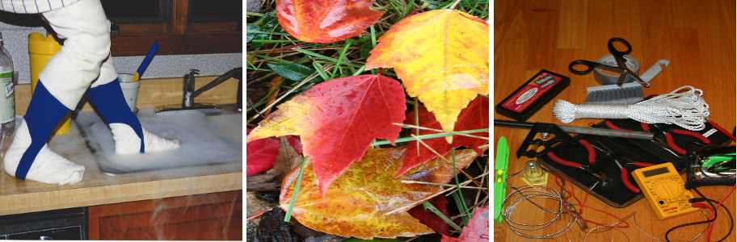
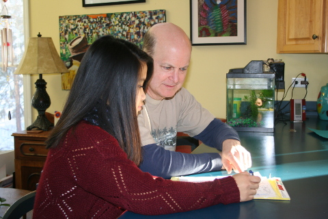

STEM is all around your home.
Cooking, repairing a bicycle, gardening, helping you fix the toilet, taking care of a fish tank – these are all activities that could be suitable for your child. Think of others that involve observing, asking questions and defining problems, looking for evidence, evaluating information, planning and investigating, measuring, using tools – all practices of scientists and engineers that you can encourage at home. Encourage scientific play in young children. Provide water, vegetable oil, food coloring and a bowl in a "mess allowed" area of the kitchen.
Encourage Questions.
Children are naturally curious. Seek out answers to their questions, together. Model life-long learning. Explore the internet together; take a trip to the library. Look for answers in your yard, a park, a museum.
Provide a good school-study environment, talk about school and start early.

- A desk or table space, good lighting and a quiet environment are important for working on homework. Require your child to turn off phones and other electronics. Offer assistance, but know when to leave your child to struggle a bit.
- Ask your child to tell you what she is learning in school. Question him about challenges he may be encountering. How can you help? Talk about successes, too.
- Research says that middle school is all important for developing engagement, interest and confidence in mathematics and science. Encourage your child's interest and please refrain from comments like "lots of girls are bad in math – I didn't like it either."
- Help your child make good educational choices and to see the connections between their science, math and technology classes and future career options – especially important in high school.
You are important in your child's out-of-school education.
- Plan family trips to museums, arboreta, and the zoo. Schedule factory tours. When possible include visits to museums and national parks during your out of town vacations to enlarge their world. See the Places to Go page in the Student section of this website.
- If you watch TV, watch together and encourage nature, science and technology offerings. Talk about the program you viewed afterward.
- Encourage their participation in after school STEM clubs, scouting, nature day camps and other informal learning opportunities. See what your park district or local library have to offer.
More ideas for things you can do at home:
How to Impart STEM Education to Your Children
Learn More
Project ideas for STEM at home:
From Elmer's Glue
Books and crafts to promote STEAM (This acronym includes the “Arts” with STEM)
Visit their Website
Science Kids
Activities, experiments, videos & more. Math & English activities too!
Visit their Website
Online Science
Games, videos and more, from the Museum of Science and Industry.
Visit their Website